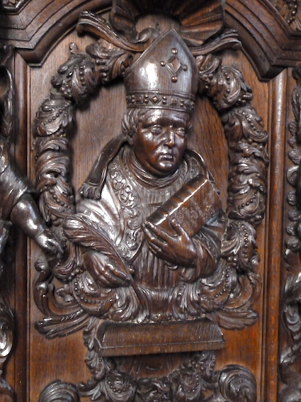

This site has four elements: texts and some concordances for the three collections traditionally associated with Ivo of Chartres, the Collectio Tripartita, the Decretum and the Panormia, and a list of manuscripts which contain a significant number of Ivo’s letters. A further draft list of sermons is in preparation. Each element differs in its method of construction, the contribution made by each of those involved, and in its state of development. The principles on which they have been prepared are explained in the introduction to each. We owe a great debt to the Stephan Kuttner Institute for Medieval Canon Law at Munich and to the President, Professor Peter Landau, and to Dr Joerg Müller for their unfailing generosity. The IRHT at Orléans has also been extremely helpful. The British Academy provided a grant for the purchase of microfilm. Essential technical support has been provided by Matthew Brett. Rufus Pollock introduced us to Knowledge Forge, which hosted the site for many years.
Such provisional texts are intended to encourage others to correct and develop what we have done for the common profit. We hope that other scholars will over time convert these first sketches into a solid body of secure learning, capable of producing more systematic publication by others. Accordingly, we ask any who use the site to inform us of our errors and supply our deficiencies. The authors would be delighted by just criticism. Bruce Brasington is jointly responsible for the Panormia section. The Tripartita texts and the annotated Decretum were originally the responsibility of Martin Brett, with much help from Bruce and others listed there; the handlist of manuscripts of the letters is mostly the work of Christof Rolker; the Tripartita site is now in the first instance under the care of Przemysław Nowak of Warsaw (p-nowak@gmx.de).
If you cite the documents on this website, please give the date / revision stamp of the website at the time you downloaded the files.
The current date / revision stamp is .
An example citation might be:
http://ivo-of-chartres.github.io/decretum/ivodec_4.pdf with date / revision stamp .
The photographs come from the late-seventeenth-century choir stalls of the Augustinian priory of Oignies in Hainault (dissolved 1796), placed in the parish church of St John at Cockayne Hatley (Beds) in 1826 by Henry Cust, for whom they had been bought by the noted connoisseur and collector Col. Robert Rushbrooke. C. Tracy, Continental church furniture in England (2001), catalogue no. M/9; see too idem in Proceedings of the Suffolk Institute of History and Archaeology xl (2004) 306-30.